Shakshat Virtual Lab 
INDIAN INSTITUTE OF TECHNOLOGY GUWAHATI
Exp-3 Fourier analysis of signals


Contents:-
Introduction to Fourier analysis methods
♦ Continuous-time Fourier series (CTFS)
♦ Discrete-time Fourier series (DTFS)
♦ Continuous-time Fourier transform (CTFT)
♦ Discrete-time Fourier transform (DTFT)
♦ Salient properties of Fourier analysis method
Relationship among Fourier analysis methods
♦ Relationship between CTFS and CTFT
♦ Relationship between DTFS and DTFT)
♦ Relationship between CTFT and DTFT
Introduction to Fourier analysis methods
In the following we first describe different Fourier methods available for analysing continuous-time and discrete-time signals. It would be followed by listing of salient properties of these Fourier analysis methods.
Continuous-time Fourier series (CTFS):
For a continuous-time signal x(t), the Fourier series representation of a signal over a representation time
is defined as
where X[k] is the harmonic function, k is the harmonic number and f F = 1/ TF. The harmonic function is computed as
The signal and its harmonic function form a pair which is indicated by the notation
The left hand side of the above relation represents the signal in time domain while the right hand side represents the transformation of the signal to a "harmonic-number" domain.
Discrete-time Fourier series (DTFS):
For a discrete-time signal x(n), the Fourier series representation over a representation time
is defined as
where X[k] is the harmonic function and the harmonic function can be found as
The discrete-time signal and its harmonic function form a pair which is indicated by the notation below
where 'NF' is the representation time and the notation
means summation over any range of consecutive 'k' exactly NF in length.
Continuous-time Fourier series (CTFS):
The continuous-time Fourier transform(CTFT) is defined as
The forward and inverse transforms are almost same, only the sign of the exponent and the variable of integration change. The continuous-time signal x(t) and its Fourier transform X(f) pairs are indicated by the notation below.
Discrete-time Fourier transform (DTFT):
The discrete-time Fourier transform is defined by

and
The signal and its harmonic function form a pair which is indicated by the notation below

Salient properties of Fourier analysis methods:
Some of the salient properties exhibited by the continuous-time as well as discrete-time Fourier transform / Fourier series are given below.
Linearity property:
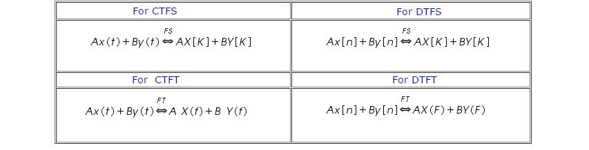
Time shifting property:
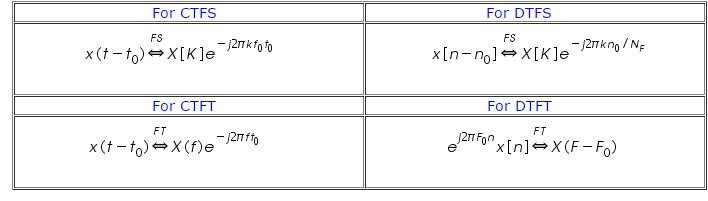
Frequency shifting property:
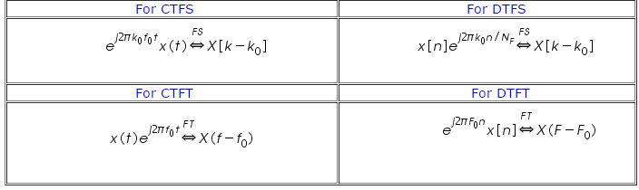
Multiplication-convolution property:
Multiplication:
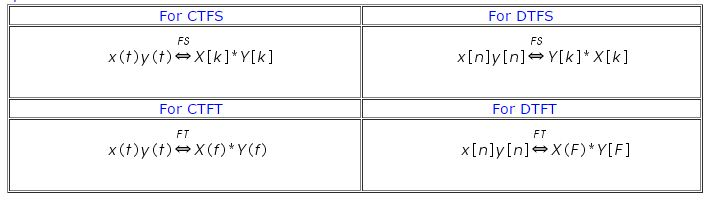
Convolution:
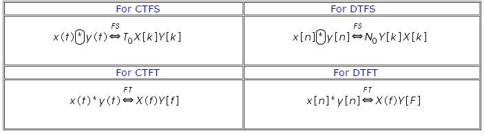
Parseval's theorem::
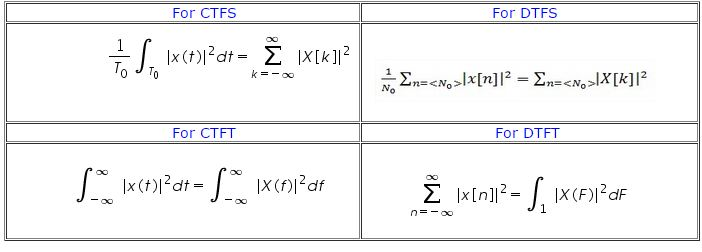
Relationship among Fourier analysis mehods:
There are many similarities among different Fourier analysis methods and their relationship are discuss below. These relationships provide the basis of processing of the analog signal in digital domain.
Relationship between CTFS and CTFT:
For a periodic signal x(t) with fundamental period T0 = 1/ f0 can be represented for all time using CTFS representation
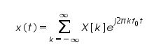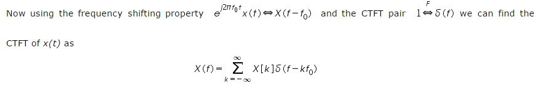
The CTFT of a periodic function is a continuous frequency function, which consists of a sum of impulses spaced apart by the fundamental frequency of the signal, whose strengths are the same as the CTFS harmonic function at the same harmonic number multiple of the fundamental frequency. The CTFS is just a special case of the CTFT.
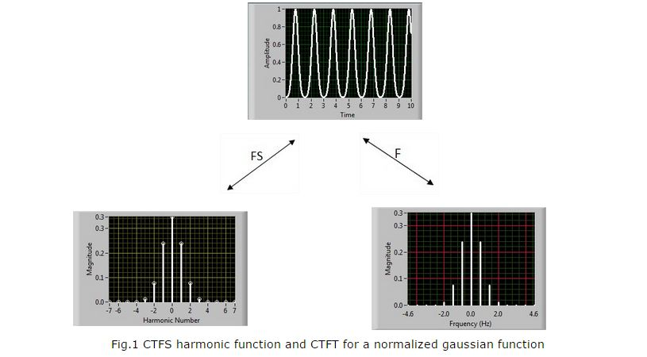
The information equivalence of a harmonic function X[k] and CTFT function X(f) is shown in Fig.1. Note, here X[K] is a function of discrete variable, harmonic number k whereas X(f) is a function of continuous variable frequency f. These two functions are equivalent in the sense that X(f) is non zero only at the integer multiples of 'k' of the fundamental frequency f0 and X[k] is only defined at integer values of k.
We can observe that the values of X[k] at the integer values of 'k' are the same as the strengths of the impulses in X(f) that occur at 'kf0'. For a periodic function x(t)
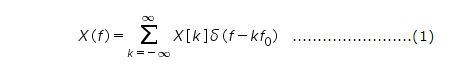
The relationship between CTFS and CTFT can also be estblished for aperiodic signal and is achieved by finding relationship between the CTFT of an aperiodic signal and the CTFS function of periodic extention of that signal. Let us consider x(t) be an aperiodic function of time and let xp(t) is a periodic extension of x(t) with fundamental period Tp defined by
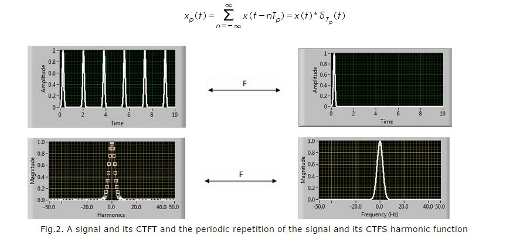
The CTFT of x(t) is X(f). Using the multiplication-convolution duality of the CTFT, the CTFT of xp(t) is
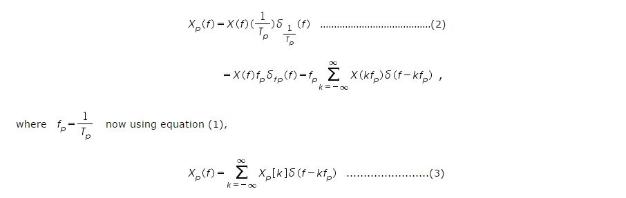
Now combining equations (2) & (3), we get
We can say that if an aperiodic function is periodically extended to form a periodic function xp(t) with fundamental period 'Tp' the values of the CTFS harmonic function Xp[K] of xp(t) are samples of the CTFT X(f) of x(t) taken at the frequencies Kfp and then multiplied by the fundamental frequency of the CTFS 'fp'. This forms an equivalance between sampling in the frequency domain and periodic repetition in the time domain. Figure 2 shows a signal and its CTFT and periodic repetition of the signal and its CTFS harmonic function.
Relationship between DTFS and DTFT:
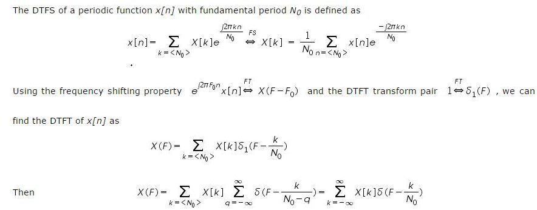
The DTFS is simply a special case of the DTFT for periodic functions. If a function x[n] is periodic, its DTFT consists only of impulses occurring at K/N0 with strengths X[K].
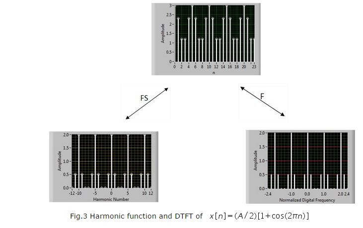
For a periodic function x[n] with fundamental period N0
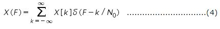
Another important point is the relationship between the DTFT of an aperiodic signal and the DTFS harmonic function of a periodic extension of that signal. Let x[n] be an aperiodic function and its DTFT is X(F). Let xp[n] be a periodic extension of x[n] with fundamental period Np such that
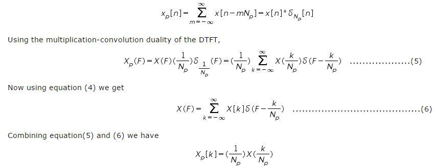
From the above equation, it says that if an aperiodic signal x[n] is periodically repeated with fundamental period Np to form a periodic signal xp[n], the values of its DTFS harmonic function Xp[k] can be found from X(F), which is the DTFT of x[n], evaluated at the discrete frequencies k / Np. This forms an equivalence between sampling in the frequency domain and periodic repetition in the time domain. Figure 4 shows a signal and its DTFT and periodic repetition of the signal and its DTFS harmonic function.
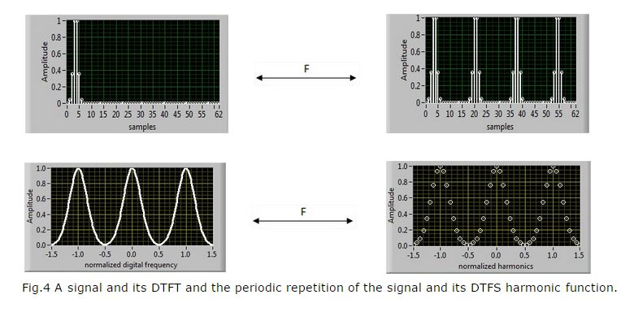
Relationship between CTFT and DTFT:
The CTFT is the Fourier transform of a continuous-time function and DTFT is the Fourier transform of a discrete-time function. By multiplying a continuous time function x(t) by a periodic train of unit impulses spaced Ts seconds apart, we can create the continuous-time impulse function
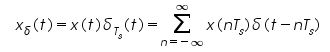
If we form a function x[n] whose values are the values of the original continuous time function x(t) at integer multiples of Ts and these are also the strengths of the impulses in the continuous time impulse function x∂ (t) , we get the relationship x[n] = x(nTs). The two functions x[n] and x∂ (t) are completely defined by the same set of numbers and contain the same information. By finding the CTFT of the above equation we have,
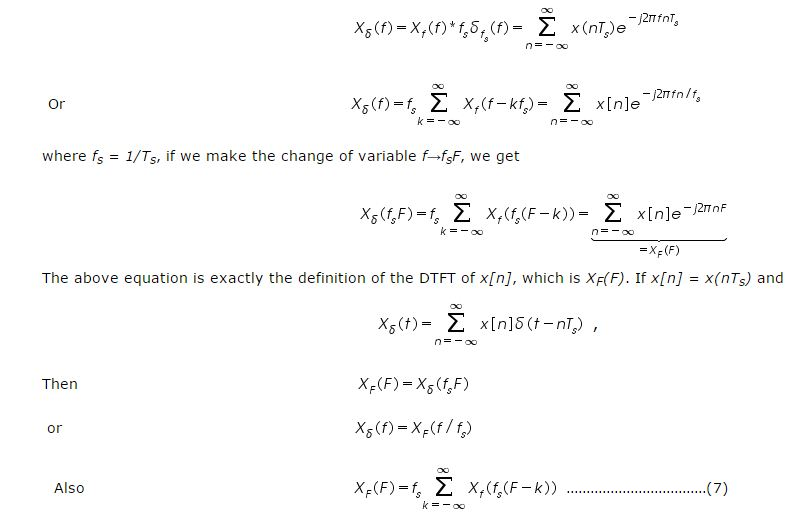
We have a correspondence between a function x[n] of a discrete independent variable and an impulse function x∂ (t) of a continuous independent variable, here x[n] in case of discrete time 'n' and x∂ (t) n case of continuous time 't'. There is also an information equivalence between the DTFT of the function x[n] and the CTFT of the function x∂ (t) . Figure 5 given below shows this information.
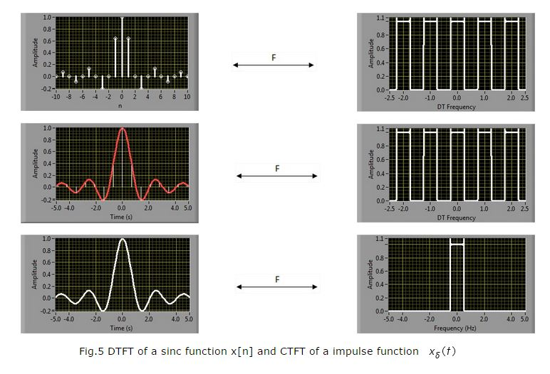
There is also some equivalence between the CTFT of the original function x(t) and the DTFT of the function x[n] through equation (7). Given Xf (f), we can find XF (F). However the reverse of this statement is not always true. Given XF (F), we cannot always be sure of being able to find Xf (f)).